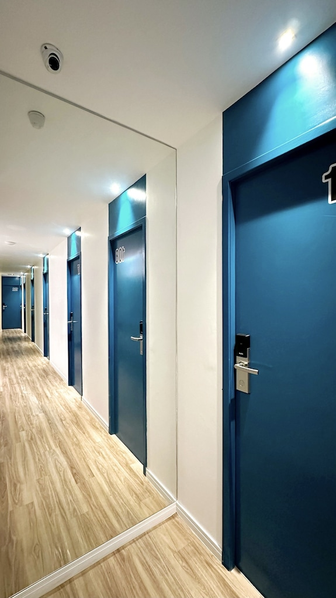

Servicio profesional de pintura para hogares, oficinas y comercios. Prolijidad, preparación de superficies, impermeabilización y excelentes terminaciones en Mar del Plata.
Evaluamos el estado de las paredes, los metros cuadrados y te asesoramos sobre los materiales adecuados.
Realizamos lijado, limpieza, aplicación de enduido, fijador y tratamiento de humedades previas.
Pintura de calidad con manos uniformes, protección de aberturas/pisos y prolijidad absoluta.
Trabajamos con materiales de primera marca y cuidamos cada detalle de tu hogar.
💳 Formas de pago: Efectivo o transferencia bancaria al finalizar el trabajo.
Soluciones completas para renovar y proteger tus espacios:
Escribinos por WhatsApp y coordinamos tu presupuesto sin cargo.
Trabajo de pintura realizado en Mar del Plata:

Cuidamos cada etapa para lograr terminaciones impecables:
Preparación profunda de paredes, saneamiento de revoques flojos y aplicación de aislantes.
Renovación de ambientes, livings, habitaciones y pasillos con pinturas lavables de alta durabilidad.
Uso de productos impermeabilizantes especiales para resistir el clima marino de la costa.
Alisado perfecto de superficies para eliminar imperfecciones antes de dar color.
Lijado, aplicación de convertidor de óxido y esmaltes sintéticos protectores.
Protección minuciosa de pisos, muebles y aberturas con cinta y plásticos durante todo el proceso.
Asesoramiento personalizado en combinación de colores y tipos de pinturas (látex, sintéticos, impermeabilizantes).
Disponibles para coordinar turnos, presupuestos y consultas en el siguiente horario:
Brindamos soluciones integrales de reparación y service a domicilio en Mar del Plata:
Atendemos en toda la zona de Mar del Plata y la costa: